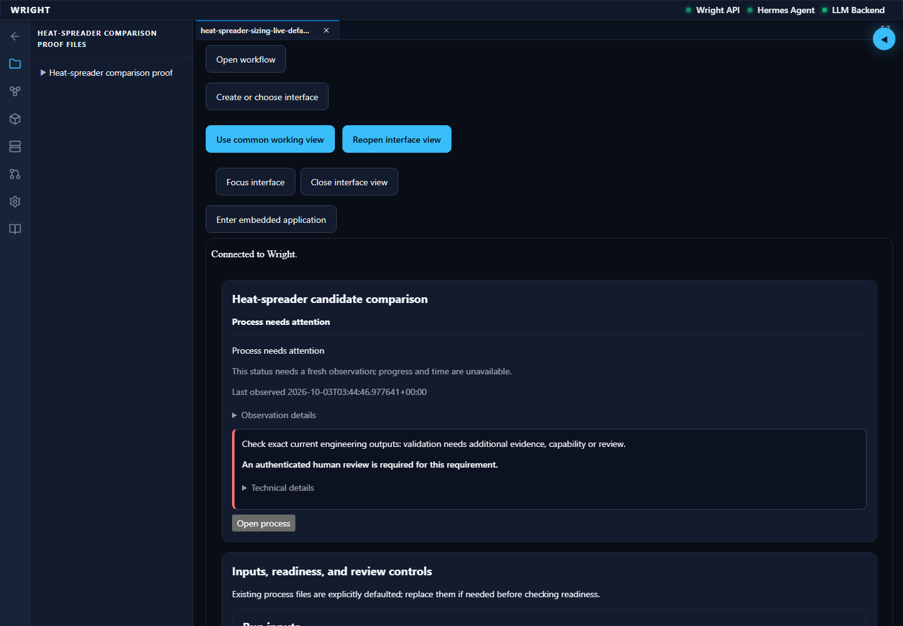
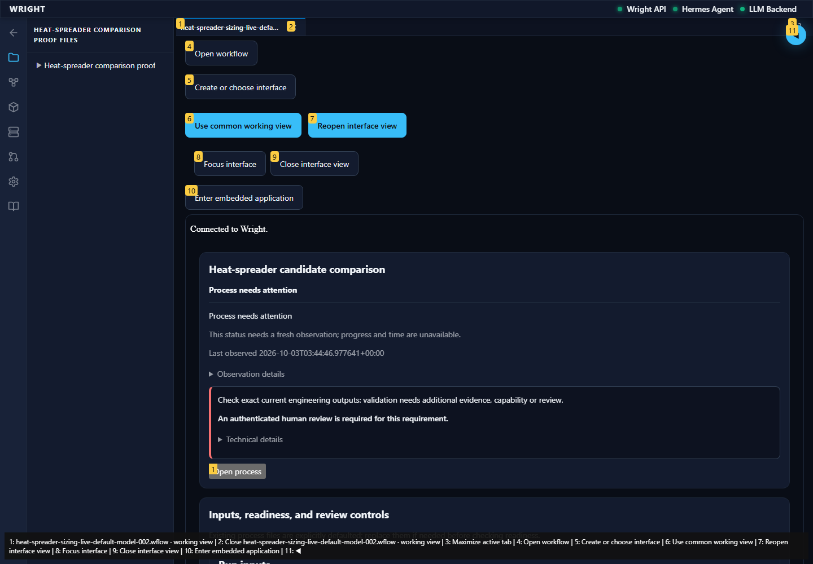
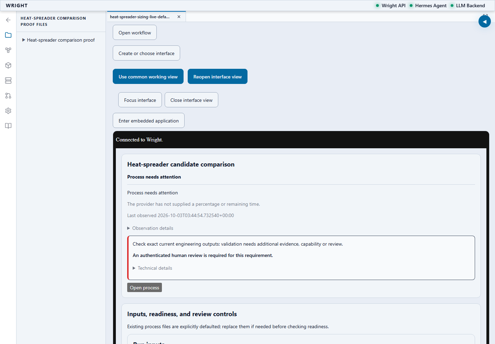
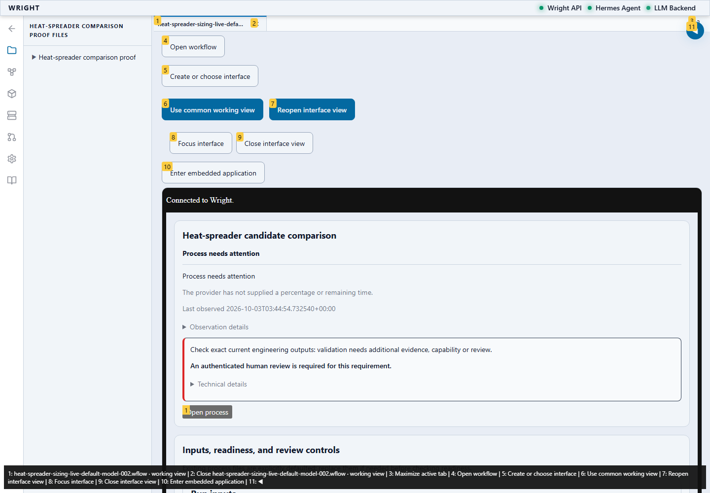

Actual settings controls and saved model-created interfaces; no process start, review or global preference save.
Status: blocked
The exact saved revision and engineering outputs are connected.
Expected: Exact saved revision and current results.
Actual: 18 exact results in the current working context.
raw 
annotated 
The first unexpected interface behavior is preserved.
Expected: Parent and saved interface have the same selected theme and exact run context.
Actual: expect(received).toEqual(expected) // deep equality - Expected - 1 + Received + 1 Object { "neutral": "#e8edf5", "primary": "#0f172a", - "scheme": "light", + "scheme": "dark", } Call Log: - Timeout 30000ms exceeded while waiting on the predicate
raw 
annotated 